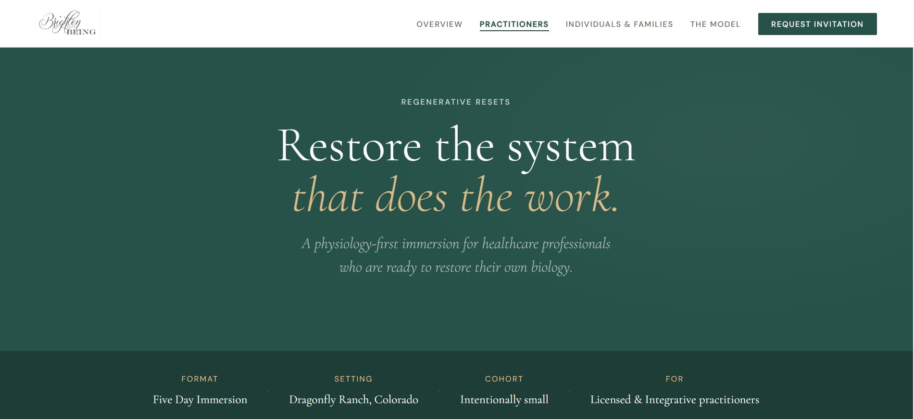
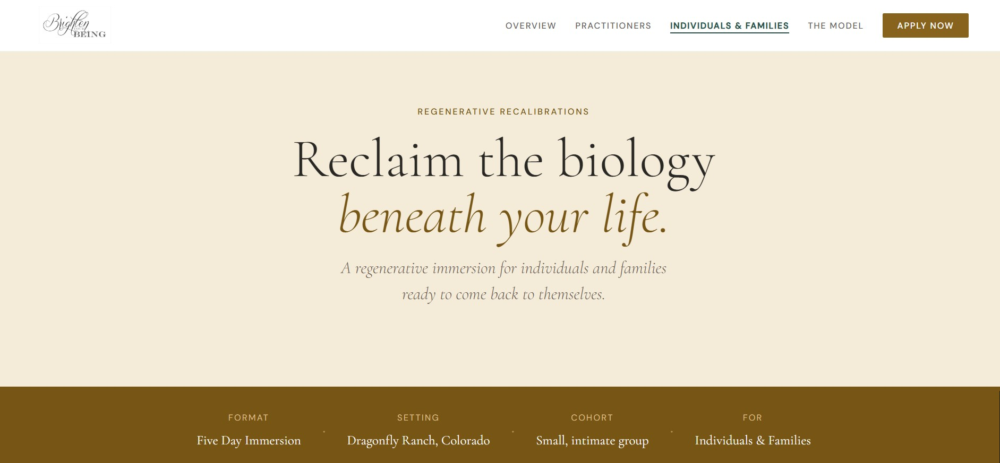
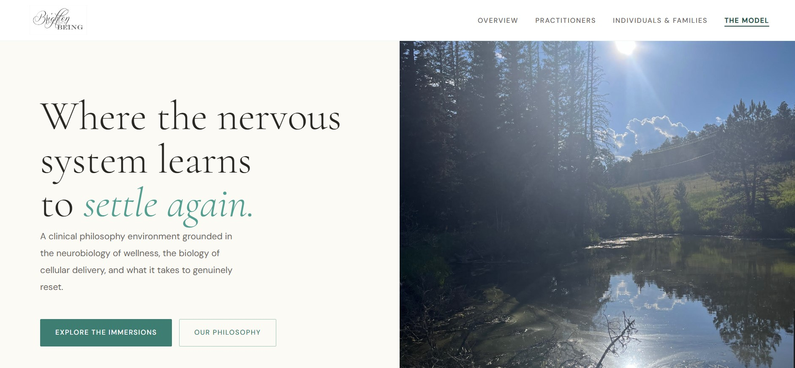
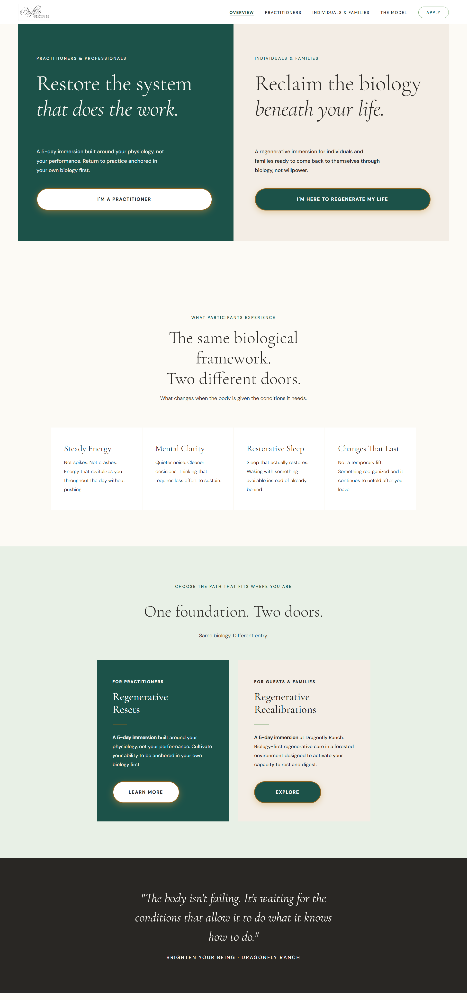
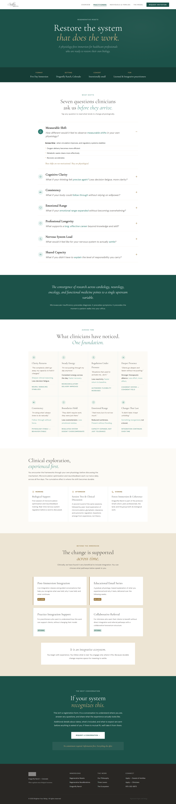
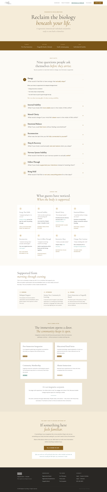

Brighten Your Being
A biology-first wellness site built for two very different audiences, on a full design system with an accessibility-first approach.
Overview
Brighten Your Being is a regenerative wellness practice run out of Dragonfly Ranch, a forested property near Boulder, Colorado, founded by LoriGrace Kochevar, M.S., L.P.C. As the freelance designer and developer on the project, I took the site from a first conversation to a live, WCAG AA–audited build. I owned discovery, visual design, front-end build, and accessibility testing myself.
The site speaks to two distinct audiences from one shared brand: Regenerative Resets, a five-day immersion for licensed healthcare practitioners, and Regenerative Recalibrations, the same immersion built for individuals and families. I built the whole thing on a reusable design system so LoriGrace could keep extending it after launch, and treated accessibility as a design requirement from day one, not a pass at the end.
The problem
The client's offering is clinical at its core. It uses a physiology-first framework built on microcirculation, nervous system regulation, and glymphatic clearance, but it's delivered inside a forested retreat setting meant to feel restorative, not medical. The site needed to hold both of those truths at once, and speak credibly to two audiences with very different reasons for showing up: clinicians evaluating the science, and individuals or families looking for care.
The existing web presence didn't reflect that duality, and hadn't been checked against accessibility standards. The goal was a site that felt as grounded and restorative to browse as the retreat itself is to visit, built on a design system LoriGrace could keep extending long after launch.
My role
- Led discovery: worked with LoriGrace to translate a clinical, biology-first philosophy and the atmosphere of Dragonfly Ranch into tone, color, and typography.
- Built the design system: a reusable component library covering type scale, color tokens, and layout patterns shared across both audience tracks.
- Ran the accessibility audit: tested contrast, keyboard navigation, and screen-reader flow against WCAG guidelines and fixed every issue found, including 47 contrast errors.
- Shipped the build: hand-coded the site in HTML/CSS and deployed it to Netlify, migrating the domain over from the client's previous GoHighLevel setup.



Discovery & Design
Finding the retreat's tone, digitally
I sat down with LoriGrace to translate two things into one visual language: the clinical precision behind the work, and the quiet, forested feeling of Dragonfly Ranch itself. That became a set of tangible design decisions. The result was a grounded, earthy palette, a serif for moments of emotional weight, a clean sans-serif for the physiology content, and generous whitespace so dense clinical explanation never felt overwhelming.
As a practitioner,
I want to see the physiological framework, microcirculation, nervous system regulation, and glymphatic clearance explained with enough rigor that I can evaluate it professionally.
I want a clear, accessible path to start a conversation, regardless of the device or assistive technology I'm using.
As a guest or family member,
I want to understand what steady energy, clearer thinking, and real rest could feel like, without wading through clinical jargon.
I want a low-stakes way to say "tell me more" before anything is asked of me.
Building for consistency
With a clear point of view established, I built out a reusable component library so every page ; home, the shared Model page, and both audience tracks ; could be assembled from the same trusted parts.
- Designing two parallel tracks from one shared foundation, so Regenerative Resets and Regenerative Recalibrations feel like the same brand speaking two different languages.
- Unifying the visual design with a cohesive color system while ensuring full accessibility compliance across both tracks.
- Integrating client feedback from LoriGrace throughout the process to continuously refine tone and structure.
Key screens




Accessibility Audit
Testing results
Tested contrast, keyboard navigation, and screen-reader flow against WCAG guidelines, then fixed every issue found before launch.
- 47 body-copy and accent-color pairings initially fell short of AA contrast ratios.
- Keyboard-only navigation surfaced a few components missing visible focus states.
I rebuilt the accent palette into corrected color tokens that hit AA contrast everywhere they're used for text. I also added consistent focus outlines across every interactive component in the design system, so future pages inherit compliance automatically instead of needing a re-audit.
What shipped
The final design system gave LoriGrace a documented, accessible foundation to keep building on well past launch. The site itself is live, fully responsive, and fully accessible, with a clear path for both audiences to learn more and request an invitation.
Reflection
Results & impact
- Live, accessible site: Shipped a WCAG AA–audited site that holds a clinical framework and a restorative brand feeling at the same time.
- Two audiences, one system: Built a reusable design system that lets Regenerative Resets and Regenerative Recalibrations share a foundation without feeling identical.
- End-to-end delivery: Owned discovery through deployment and domain migration solo, as an ongoing freelance partner to the client.
Key learnings
- Accessibility is easier built in than bolted on: Designing with contrast and focus states in mind from the start meant far fewer fixes at audit time.
- One brand can speak two languages: Splitting content by audience ; clinical for practitioners, felt-experience for guests ; worked better than trying to write one voice for everyone.
- Client education is part of the deliverable: A system is only as durable as the client's ability to use it after handoff.